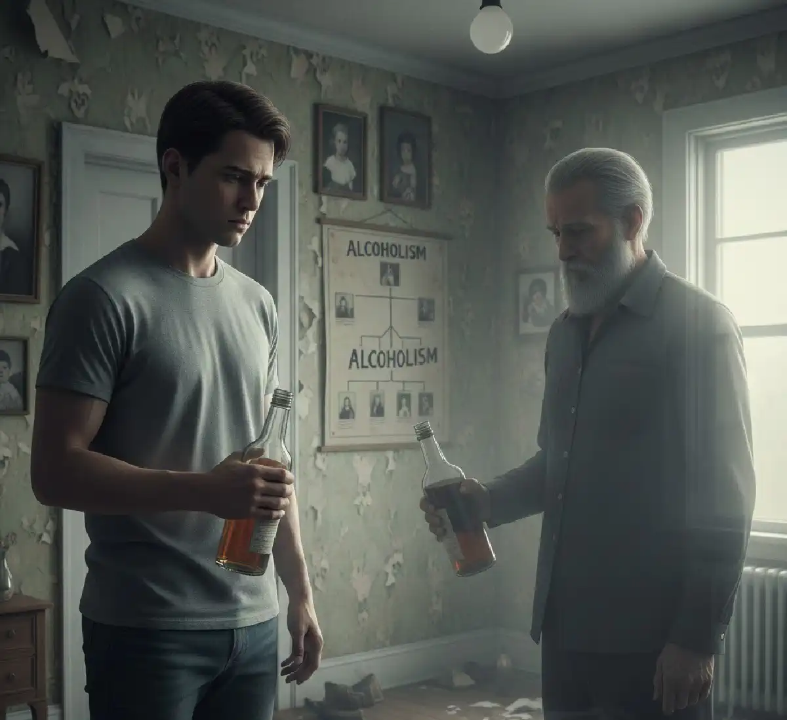

+38(068) 79 72 782
+38(068) 79 72 782Чи передається алкоголізм у спадок — думка лікаря-нарколога
Спадковість чи спосіб життя? Вся правда про алкоголізм


Безкоштовна консультація, працюємо цілодобово 24/7
Спадковість чи спосіб життя? Вся правда про алкоголізм
Алкоголізм — одна з найбільш обговорюваних і водночас сильно стигматизованих форм залежності в сучасному суспільстві. Незважаючи на широке поширення проблеми, навколо неї досі існує безліч помилкових уявлень, страхів і спрощених уявлень. Особливо часто людей хвилює питання спадковості: чи передається алкогольна залежність від батьків до дітей і чи означає наявність питущих родичів неминучу долю для наступних поколінь. Це питання має не тільки медичне, а й глибоке психологічне та соціальне значення, оскільки безпосередньо впливає на самооцінку людини, її життєві установки та ставлення до власного майбутнього.
У цій статті ми детально розглянемо, як саме пов’язані алкоголізм і спадковість, і чому важливо розрізняти генетичну схильність і пряме передавання захворювання. Ми розберемося, які біологічні механізми можуть підвищувати ризик розвитку залежності, але при цьому не роблять її неминучою. Окрему увагу буде приділено ролі сімейного середовища, виховання, стресів і психологічних факторів, які часто впливають не менше, ніж гени.
Матеріал підготовлений з урахуванням думки лікаря-нарколога UmbrellaPlus та сучасних клінічних уявлень про природу залежності. Його мета — не налякати, а дати об’єктивну, науково обґрунтовану інформацію, яка допоможе краще зрозуміти проблему алкоголізму, зменшити надмірну тривогу та прийняти зважені рішення щодо власного здоров’я та здоров’я близьких.
Спадкова схильність — це не вирок і не заздалегідь визначений сценарій, а лише підвищена ймовірність розвитку захворювання за наявності певних умов. Під цим поняттям розуміють сукупність генетичних особливостей, які самі по собі не викликають алкоголізм, але можуть підвищувати чутливість організму та психіки до впливу алкоголю. У контексті залежності це означає наступне: якщо в сім’ї вже були випадки алкоголізму, у нащадків дійсно вищий ризик формування залежної поведінки, але тільки за наявності зовнішніх провокуючих факторів — регулярного вживання спиртного, сильного або хронічного стресу, несприятливої психологічної обстановки, раннього знайомства з алкоголем або відсутності навичок емоційної саморегуляції.
Сучасні дослідження показують, що на схильність до алкогольної залежності впливають гени, пов’язані з метаболізмом етанолу, зокрема гени, що кодують ферменти алкогольдегідрогеназу та альдегіддегідрогеназу. Ці ферменти відповідають за розщеплення алкоголю та виведення його токсичних продуктів. Залежно від генетичних варіацій одна людина може переносити алкоголь відносно «легко», не відчуваючи виражених негативних наслідків, тоді як у іншого навіть невеликі дози викликають сильну інтоксикацію або, навпаки, яскраво виражене відчуття розслаблення та ейфорії. Обидва варіанти можуть підвищувати ризик залежності, але за різними механізмами. Крім того, значну роль відіграють гени, що впливають на роботу нейротрансмітерних систем мозку — дофамінової, ГАМК-ергичної та серотонінової. Саме ці системи відповідають за відчуття задоволення, розслаблення, зниження тривоги та формування мотивації. У людей із певними генетичними особливостями алкоголь може сильніше активувати «центр винагороди», швидше формуючи психологічну тягу та закріплюючи звичку як спосіб справлятися з напругою або негативними емоціями. Однак навіть за наявності таких генетичних факторів їх прояв безпосередньо залежить від способу життя, соціальних умов і особистого вибору людини.
Важливо розуміти, що одна й та сама генетична варіація може по-різному проявлятися у різних людей. Одна людина зі спадковою схильністю може зовсім не зіткнутися із залежністю, якщо не вживає алкоголь регулярно, вміє справлятися зі стресом і має підтримуюче оточення. Інший, навіть без вираженої сімейної історії алкоголізму, може сформувати залежність за поєднання несприятливих факторів — психологічних травм, соціальної ізоляції, депресії або тривалих стресів. Це ще раз підкреслює, що вирішальну роль відіграє не генетика сама по собі, а взаємодія спадкових і середовищних факторів.
Принципово важливо пам’ятати: спадкова схильність — це статистична ймовірність, а не особистий діагноз. Наявність алкоголізму у одного або обох батьків збільшує ризик для дитини, але не робить розвиток залежності неминучим. І навпаки, відсутність випадків алкоголізму в сім’ї не гарантує захисту від проблеми. Саме тому в сучасній наркології акцент робиться на ранню профілактику, формування здорових моделей поведінки, навчання навичкам стресостійкості та уважне ставлення до перших ознак залежності.
Так, генетика дійсно має помітний вплив на формування алкогольної залежності, проте вона є лише однією частиною значно складнішої та багаторівневої картини. Великі дослідження, включно з аналізом сімей та однояйцевих близнюків, переконливо показують, що на частку спадкових факторів припадає приблизно 40–60 % варіабельності ризику розвитку алкоголізму. Ці дані підкреслюють важливість генетичної складової, але одночасно ясно демонструють: гени не визначають долю людини і не діють ізольовано від інших факторів.
Механізми генетичного впливу на розвиток залежності різноманітні й багатогранні. Один із ключових аспектів — метаболічні особливості. Генетичні варіації ферментів, що відповідають за переробку алкоголю, можуть значно прискорювати або, навпаки, уповільнювати розпад етанолу та його токсичних метаболітів. У одних людей алкоголь викликає виражені неприємні реакції — нудоту, головний біль, почервоніння шкіри, прискорене серцебиття, що знижує ймовірність повторного вживання. У інших же інтоксикація протікає відносно м’яко, а відчуття сп’яніння супроводжується розслабленням і ейфорією, що підвищує ризик регулярного вживання та поступового формування залежності. Важливу роль відіграють і нейромедіаторні системи мозку. Генетичні особливості дофамінової системи можуть посилювати відчуття задоволення і винагороди від алкоголю, роблячи його більш «привабливим» способом отримати позитивні емоції. Зміни в системі ГАМК, що відповідає за гальмування та зниження тривожності, можуть призводити до того, що алкоголь сприймається як ефективний спосіб заспокоїтися, зняти внутрішню напругу або впоратися з тривогою. Серотонінова система, у свою чергу, пов’язана з настроєм та емоційною стійкістю, і її особливості також можуть впливати на схильність до вживання.
Окремої уваги заслуговують риси особистості, які частково успадковуються і опосередковано підвищують ризик залежності. Імпульсивність, схильність до пошуку гострих відчуттів, низька стресостійкість, підвищена емоційна реактивність або труднощі з самоконтролем можуть робити людину більш вразливою до формування аддиктивної поведінки. За зіткнення зі стресами, соціальним тиском або доступністю алкоголю такі риси підвищують ймовірність того, що спиртне стане звичним способом регуляції стану. Проте принципово важливо розуміти: генетика ніколи не працює окремо від середовища. Соціальні умови, сімейні моделі поведінки, культурні норми, рівень стресу, досвід дитинства та підліткового віку, доступність алкоголю та ставлення суспільства до його вживання активно взаємодіють із спадковим набором. Один і той же генетичний ризик може реалізуватися зовсім по-різному залежно від оточення: у підтримуючому і стабільному середовищі він може так і не проявитися, тоді як за умов хронічного стресу, несприятливого виховання або соціальної ізоляції — значно посилитися.
Саме тому сучасний погляд на алкоголізм базується на біопсихосоціальній моделі. Вона розглядає залежність як результат взаємодії генетичних, психологічних та соціальних факторів. Такий підхід дозволяє відійти від спрощеного і фаталістичного сприйняття проблеми та зосередитися на тому, що дійсно можна змінити: спосіб життя, навички керування емоціями, оточення та своєчасне звернення за професійною допомогою.
Коротка і найбільш коректна відповідь звучить так: у спадок передається не сам алкоголізм як готове захворювання, а лише схильність до його розвитку. Алкогольна залежність ніколи не виникає з одного-єдиного фактора — вона є результатом складної і багаторівневої взаємодії генетичних особливостей людини та умов, у яких вона живе. Саме тому у одних людей із «неблагополучною» спадковістю залежність так і не формується, а у інших — без явної сімейної історії — розвивається тяжка форма алкоголізму. Якщо розглядати питання глибше, стає очевидно, що не існує якогось «гена алкоголізму», наявність якого автоматично передбачала б хворобу у нащадків. Генетично передається не захворювання, а певний набір варіантів генів, кожен із яких вносить невеликий внесок у загальний ризик. Ці гени впливають на цілий ряд біологічних і психологічних процесів, які разом можуть підвищувати вразливість до формування залежності.
У першу чергу це стосується особливостей сприйняття алкоголю та чутливості до його ефектів. У одних людей спиртне викликає яскраво виражене розслаблення, підйом настрою та відчуття полегшення, у інших — переважно негативні реакції. Така різниця значною мірою зумовлена генетикою і впливає на ймовірність повторного вживання. Немаловажна й швидкість метаболізму алкоголю: генетичні варіації ферментів визначають, як швидко етанол і його токсичні метаболіти виводяться з організму, що безпосередньо пов’язано з суб’єктивним досвідом сп’яніння та похмілля.
Ще одна важлива група факторів — реактивність стресової системи та здатність до самозаспокоєння. Генетично обумовлені особливості роботи гіпоталамо-гіпофізарно-надниркової осі та нейромедіаторних систем можуть робити людину більш чутливою до стресу, тривоги та емоційного напруження. У таких випадках алкоголь починає сприйматися як доступний і швидкий спосіб зняти внутрішній дискомфорт, що значно підвищує ризик формування залежності. Значну роль відіграють і психологічні характеристики, які частково успадковуються. Імпульсивність, схильність до ризику, підвищена тривожність, труднощі з відстрочкою задоволення, потреба в пошуку сильних відчуттів — усі ці риси самі по собі не є патологією, але в поєднанні з алкоголем можуть сприяти закріпленню залежної поведінки. Особливо небезпечно, коли такі особливості проявляються у підлітковому віці на фоні незрілих механізмів самоконтролю.
Усі перелічені фактори формують підвищену вразливість, але не неминучість. Рішення має вирішальне значення середовище, у якому росте та живе людина. Доступність алкоголю, культурні норми споживання, сімейні моделі поведінки, пережиті психологічні травми, хронічний стрес, депресивні та тривожні розлади — усе це може або «активувати» спадкову схильність, або, навпаки, нівелювати її вплив. Саме тому сучасна наркологія підкреслює: знання про можливу генетичну схильність — це не привід для страху, а інструмент профілактики. Усвідомлене ставлення до алкоголю, розвиток навичок емоційної регуляції, підтримуюче середовище та своєчасне звернення до фахівця дозволяють суттєво знизити ризик реалізації спадкової вразливості і зберегти контроль над власним життям і здоров’ям.
Генетика дійсно відіграє важливу роль, але вона далеко не єдиний і не вирішальний елемент у формуванні алкогольної залежності. Не менш значущий вплив мають сімейне середовище, особливості виховання та індивідуальні психологічні характеристики людини. Саме вони у значній мірі визначають, чи реалізується спадкова вразливість або залишиться лише потенційним ризиком. Одним із ключових механізмів є моделювання поведінки. Діти, які з раннього віку спостерігають регулярне вживання алкоголю дорослими, особливо батьками, несвідомо засвоюють цей стиль поведінки як норму. Якщо алкоголь у родині використовувався як спосіб справлятися з труднощами, знімати стрес, «нагороджувати» себе після важкого дня або уникати проблем, дитина часто переносить ці сценарії у доросле життя. Навіть усвідомлюючи негативні наслідки, вона може автоматично відтворювати знайому модель, оскільки інших способів регуляції емоцій їй просто не показали.
Велике значення має емоційна доступність батьків та сформований стиль прив’язаності. За сприятливої, надійної прив’язаності дитина вчиться розпізнавати свої почуття, виражати їх і отримувати підтримку від значущих дорослих. Навпаки, несприятливі стилі прив’язаності — тривожно-амбівалентний або уникаючий — часто формуються за умов непослідовності, холодності або емоційної недоступності батьків. У таких випадках доросла людина може відчувати труднощі з саморегуляцією, пошуком опори всередині себе та схилятися до використання зовнішніх засобів, включно з алкоголем, для зниження тривоги та внутрішнього напруження. Сімейні травми та порушення особистих меж також суттєво підвищують ризик формування залежної поведінки. Фізичне або психологічне насильство, емоційне нехтування, постійні конфлікти, відчуття небезпеки та хронічний стрес у родині створюють фон, на якому алкоголь починає сприйматися як спосіб втечі від реальності або притуплення болючих переживань. У дітей із таких сімей частіше формуються розлади поведінки, підвищена імпульсивність і труднощі з контролем емоцій, що збільшує ймовірність залежності у майбутньому.
Не варто недооцінювати й вплив соціально-економічних факторів. Бідність, нестабільність, безробіття, обмежені можливості для освіти та самореалізації посилюють відчуття безвиході та хронічного стресу. За таких умов алкоголь може сприйматися як доступний і швидкий спосіб отримати полегшення або тимчасово забути про проблеми, особливо якщо в оточенні відсутні альтернативні моделі coping-стратегій. Окреме місце займають супутні психічні розлади. Депресія, тривожні розлади, посттравматичний стресовий розлад, біполярний розлад та деякі розлади особистості значно підвищують ризик вживання алкоголю у форматі так званого «самолікування». Людина намагається самостійно впоратися з симптомами — пригніченим настроєм, тривогою, внутрішнім напруженням або перепадами емоцій — не усвідомлюючи, що алкоголь лише погіршує перебіг основного розладу та з часом формує додаткову проблему у вигляді залежності.
Розуміння всіх цих факторів має принципове значення для профілактики та раннього втручання. Робота не лише з окремою людиною, а й із сім’єю, психотерапія, формування навичок емоційної регуляції, підтримуюче та безпечне середовище здатні суттєво знизити ризик реалізації спадкової схильності. Такий комплексний підхід дозволяє не просто боротися з наслідками, а впливати на первинні причини, допомагаючи людині зберегти психологічне здоров’я та уникнути розвитку алкогольної залежності.
Навколо теми спадковості алкоголізму справді сформувалося багато міфів, які спотворюють розуміння проблеми, посилюють відчуття провини та безвиході у сімей, а іноді заважають вчасно звернутися за допомогою. Розглянемо найпоширеніші забобони та пояснимо, чому вони не відповідають реальності.
Розвінчання цих міфів має велике практичне значення. Воно допомагає зменшити стигматизацію, зняти необґрунтоване відчуття провини з родичів і самих пацієнтів, а також змістити фокус з фаталізму на реальні, дієві заходи профілактики та лікування. Усвідомлення того, що залежність — це результат взаємодії багатьох факторів, дає людям надію та мотивацію вчасно звертатися за професійною допомогою та вибудовувати більш здорову життєву стратегію.
Ранні роки життя справді є ключовим етапом формування особистості, механізмів саморегуляції та ставлення до психоактивних речовин. Саме в дитинстві та підлітковому віці закладаються базові нейронні зв’язки, моделі поведінки та способи реагування на стрес, тому вплив оточення у цей період може як суттєво знизити ризик розвитку залежності, так і, навпаки, багатократно його посилити.
Рання експозиція до алкоголю вважається одним із найзначущіших факторів ризику. Чим раніше відбувається перше знайомство зі спиртним, тим вища ймовірність того, що згодом будуть порушені механізми контролю вживання. Мозок підлітка ще перебуває на стадії активного розвитку, особливо зони, що відповідають за самоконтроль, планування та оцінку наслідків. Алкоголь втручається у ці процеси, роблячи нервову систему більш уразливою та формуючи звичку використовувати спиртне як спосіб отримання задоволення або зняття напруги. Стиль виховання, батьківський контроль та чіткі межі відіграють захисну роль. Йдеться не про тотальну заборону та жорсткість, а про послідовні правила, зрозумілі обмеження та довірливий діалог. Підлітки, з якими відкрито обговорюють ризики алкоголю, частіше відстрочують початок вживання і рідше переходять до небезпечних форм поведінки. Комбінація розумного контролю та емоційної підтримки зменшує потребу у протестному або компенсаторному вживанні.
Наявність альтернатив та залученість у діяльність також суттєво знижують ризик. Навчання, спорт, творчість, волонтерство та інші значущі заняття дають підлітку відчуття приналежності, самоцінності та досягнення. Коли у людини є цілі, інтереси та простір для самореалізації, потреба шукати стимули та розрядку в алкоголі помітно зменшується.
Шкільне середовище та вплив однолітків є одним із найпотужніших факторів. Підлітки особливо чутливі до норм своєї групи, і якщо вживання алкоголю вважається «нормою» або способом самоствердження, ризик зростає багатократно. Водночас підтримуюче оточення, де цінуються здорові інтереси та взаємна повага, здатне виконувати захисну функцію навіть за наявності несприятливих сімейних факторів. Важливу роль відіграють і соціальні та освітні програми. Профілактичне просвітництво, навчання навичкам критичного мислення, умінню казати «ні», управляти стресом та емоціями допомагають підліткам усвідомлено ставитися до ризиків і робити більш здоровий вибір. Такі заходи не усувають повністю можливість зіткнення з алкоголем, але суттєво знижують ймовірність того, що експеримент переросте в стійку проблему.
Таким чином, дитинство та юність — це період, коли грамотна підтримка сім’ї, школи та суспільства здатна суттєво вплинути на майбутню траєкторію життя людини, навіть за наявності генетичної схильності.
Профілактика алкогольної залежності справді потребує системного та продуманого підходу, особливо якщо йдеться про сім’ї з підвищеним ризиком. Одних заборон або повчань недостатньо — стійкий захисний ефект формується лише тоді, коли профілактика стає частиною повсякденного життя та виховання.
У сукупності такі заходи справді здатні компенсувати значну частину генетичної вразливості. Профілактика — це не разова дія, а тривалий процес, який знижує ризик, підвищує усвідомленість і створює умови для формування стійкої, здорової особистості.
Рання консультація нарколога або психотерапевта справді здатна кардинально вплинути на подальший розвиток ситуації і у багатьох випадках запобігти формуванню тяжкої залежності. Чим раніше людина отримує професійну оцінку та підтримку, тим вища ймовірність зупинити процес на початковій стадії, коли зміни в поведінці та фізіології ще оборотні.
Існують перші тривожні сигнали, які не варто ігнорувати, навіть якщо вони здаються «незначними» або тимчасовими. Поступове збільшення частоти вживання алкоголю — один із найраніших маркерів. Коли приводи для випивки стають усе більш буденними, а перерви між епізодами скорочуються, це вказує на формування звички, яка може швидко перейти у залежну поведінку.
Особливу увагу слід звернути на вживання алкоголю як спосіб справитися з тривогою, стресом або депресивним настроєм. У цей момент алкоголь перестає бути «соціальним» і починає виконувати функцію емоційної регуляції, що є одним із ключових механізмів розвитку залежності. Чим довше людина використовує спиртне для полегшення внутрішнього дискомфорту, тим складніше потім відмовитися від цього способу «самолікування».
Тривожним сигналом є й втрата контролю над кількістю випитого. Якщо людина регулярно випиває більше, ніж планувала, дає собі обіцянки «скоротити» або «пити рідше», але не може їх виконати, це свідчить про порушення волевого контролю — один із діагностичних критеріїв залежності. Поява вираженого похмільного синдрому, а тим більше потреби в медичних процедурах для відновлення працездатності, свідчить про те, що організм уже адаптувався до регулярного надходження алкоголю. На цьому етапі формується фізична залежність, і без професійної допомоги ризик прогресування різко зростає. Не менш важливі поведінкові зміни: прихованість, брехня щодо кількості випитого, спроби приховати запах алкоголю, дратівливість при питаннях про вживання. Часто до цього приєднуються проблеми у навчанні, на роботі або в сім’ї, зниження відповідальності, конфлікти, погіршення концентрації та мотивації.
Якщо в сім’ї присутня спадкова схильність до залежностей, звернення до спеціаліста на ранніх етапах особливо значиме. У таких випадках профілактична консультація, скринінг ризиків і мотиваційна робота допомагають усвідомити вразливість, скоригувати поведінку та вибудувати захисні стратегії ще до розвитку тяжкої форми захворювання. Важливо розуміти: звернення до нарколога або психотерапевта — це не визнання «алкоголізму», а крок до збереження здоров’я та якості життя. Рання допомога дозволяє уникнути серйозних медичних, психологічних та соціальних наслідків і у багатьох випадках повністю змінити траєкторію хвороби.
Лікування алкогольної залежності дійсно визначається не фактом спадкової схильності, а реальним станом людини: вираженістю симптомів, стадією захворювання, тривалістю вживання та наявністю супутніх медичних або психічних порушень. Генетична вразливість лише підвищує ризик розвитку хвороби, але не диктує результат — саме правильно підібрана терапія у значній мірі визначає прогноз.
Важливо підкреслити: наявність генетичної схильності не зменшує шанси на успішне лікування. Навпаки, усвідомлення своєї вразливості, раннє звернення за допомогою та комплексний підхід суттєво підвищують ймовірність стійкої ремісії та повноцінного, тверезого життя.
Підсумовуючи, можна виділити кілька ключових висновків, які допоможуть зрозуміти природу алкогольної залежності та шляхи її профілактики й лікування:
Для жителів України медична служба UmbrellaPlus надає професійну допомогу на всіх етапах — від консультації та ранньої профілактики до комплексного лікування алкогольної залежності. Досвідчені наркологи та психотерапевти UmbrellaPlus забезпечують індивідуальний підхід, сучасне медикаментозне супроводження, психологічну підтримку та довгостроковий моніторинг стану пацієнта.
Телефон для консультації та виклику спеціаліста: +380(50)-021-69-57
Номер телефону:
+380 (68) 797 27 82
+380 (50) 021 69 57
Адресу наркологічного центра вашого міста
уточнюйте за телефоном
Працюємо: Київ, Одеса, Львів, Харків, Дніпро,
Запоріжжя, Черкасах, Чугуєві, Чорноморську, Кам'янському
Telegram: t.me/umbrellaplus
Графік работы: Цілодобово